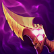

核心裝備
- 暮夜與黎明
生命與法強兼顧，適合持續近戰。
 峽谷製造者
峽谷製造者長時間戰鬥提供持續傷害與續航。

納什之牙攻速與法術附傷強化持續普攻。
 自然之力
自然之力大量法術傷害時補魔抗與移速。
 雅瑪蘭守護像
雅瑪蘭守護像進場後疊雙抗，提高後期承傷時間。
Volibear · 衝鋒暈眩／高續戰型 AP 坦鬥士
先讓三技落點覆蓋預計進場位置，再用一技碰人；二技第一次先掛標記，真正高回復來自再次咬同一個目標。
本站評級理由：弗力貝爾能靠一技強開、二技反覆咬同一目標回復，三技護盾與大絕又能撐第一輪傷害；ARAM 正面團戰很適合持續作戰。
未確認到後續標準 ARAM 專屬百分比調整；同步 6.1d 狂怒回復與三技護盾時間削弱。
生命與法強兼顧，適合持續近戰。
長時間戰鬥提供持續傷害與續航。

攻速與法術附傷強化持續普攻。
大量法術傷害時補魔抗與移速。
進場後疊雙抗，提高後期承傷時間。

物理與普攻威脅高時最穩。

控制與魔法傷害多時優先。

強化這套 ARAM 打法的核心節奏。

強化這套 ARAM 打法的核心節奏。

強化這套 ARAM 打法的核心節奏。

強化這套 ARAM 打法的核心節奏。

強化這套 ARAM 打法的核心節奏。

補進場角度與逃生。

長團維持貼身與追擊。
2 技 > 1 技 > 3 技
主 2 強化標記與反覆回復，次 1 提升追擊與暈眩；三技提供傷害與護盾，大絕能點就點。
三技先逼位或覆蓋自己進場路線，再一技接近。
兩件裝後能承擔第一波，二技盡量反覆咬同一個目標。
既能強開也能反開；敵方刺客切入時留一技保後排通常更穩。
 荊棘之甲
荊棘之甲物理普攻與治療多時補護甲重創。
 冰霜之心
冰霜之心對高攻速陣容提供護甲與攻速壓制。
 狂霸血甲
狂霸血甲需要更高生命與正面承傷時使用。
看遊戲卡片下方分類 → 點相同分類 → 看左側 S+／S／A。
二技能反覆咬同一目標是續戰核心，技能加速能直接提高回血與傷害。
被動攻速與納什玩法都需要高頻普攻，命中特效能穩定發揮。
三技能能提供明顯護盾，護盾免控與護盾真傷都非常實用。
一技能暈眩是主要留人手段，控場增幅能提高進場成功率。
多段技能與大絕進場能啟動雷霆系列，兼顧爆發與坦度。
需要長時間站在敵陣，生命與體型能提高反覆咬人與護盾的價值。
v80.16.0 ARAM A 第七批：同步 6.1d 回復與護盾削弱；不混用 AAA ARAM 數值。
ARAM 使用獨立於召喚峽谷的資料集；本站會把官方模式平衡、單線 5v5 特性與出裝／符文適配分開判斷，而不是直接複製峽谷配置。